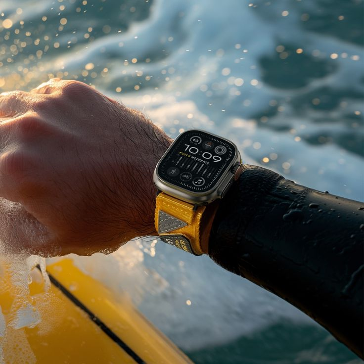

Essential Watch.
A calm, repairable wrist instrument that lives between the Casio F-91W and the Apple Watch Ultra. Accessible enough for everyday wear. Tough enough for the trail.

Calm by default.
Useful on demand.
Most smartwatches compete for your attention. The Essential Watch is built to end the interaction in one glance, so the rest of the day belongs to you.
Calm by default
A monochrome OLED shows the time, always, without a lit theater of notifications. Priorities are legibility, battery life, and one-glance information over feature bloat.
Repairable by design
A CNC aluminum case, a back cover held by four Torx screws, and a quick-release strap. Everything that can be opened, should be openable. Repair is a feature, not an accident.
One glance is enough
Two pill buttons and a rotary crown run the whole watch. Every mode answers a single question, then gets out of the way. If a feature demands more attention than that, it does not ship.
Between two legends.
One watch proved that a timepiece can cost almost nothing and never die. The other proved that a computer belongs on a wrist. The Essential Watch takes a position in between.
Forty years of dependable, legible, nearly invisible timekeeping. The bar for restraint and battery life.
The calm of a classic instrument with a thin layer of modern utility: BLE notifications, heart rate, haptics, and a crown that actually turns.
Everything a wrist computer can do, at the cost of daily charging and an app ecosystem that wants your evening.
Where the project stands.
This is a long build in public. The thinking gets documented as it happens, including the wrong turns.
Two tools, one goal.
The emulator
The watch OS runs in the browser today, before any circuit board exists. Every interaction gets tested where iteration is cheap: in pixels.
The specification
Draft v6 of the hardware spec is the single source of truth: case, display, sensors, input, haptics, and the open questions still waiting on prototyping.